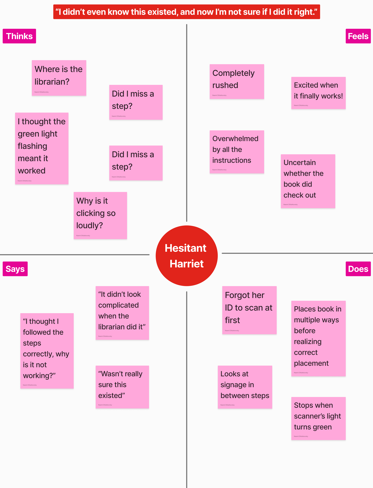
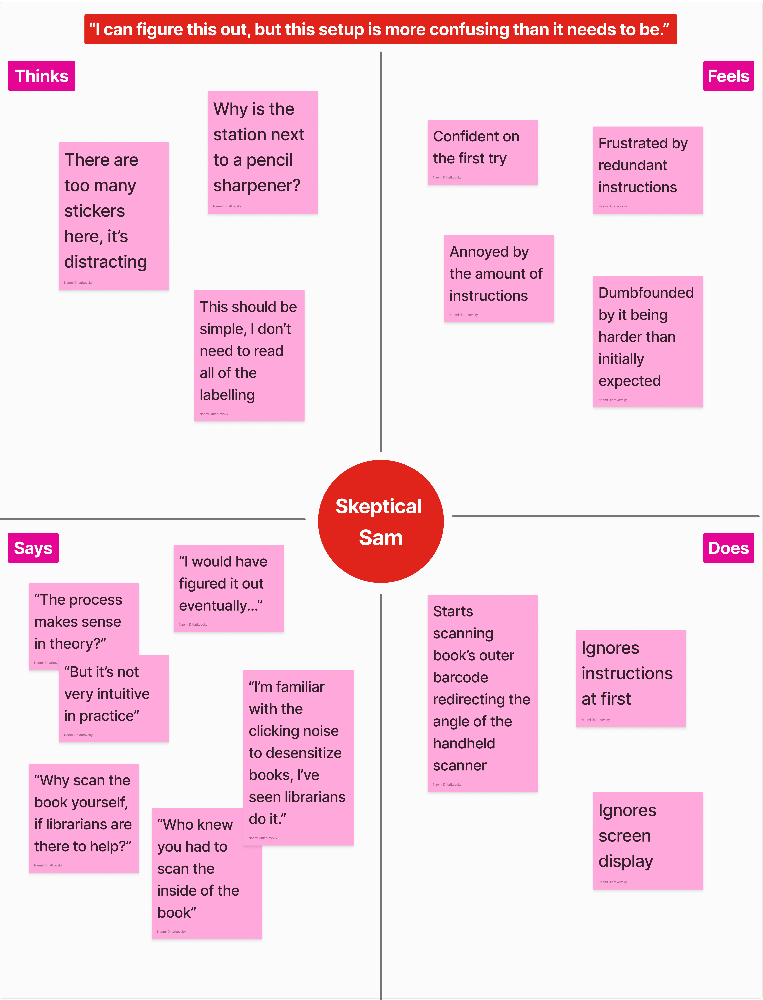

From Scan to Story: Rethinking Library Interfaces
Role: UX researcher, User Testing Lead
Skills: User interviews & synthesis, User Journey Mapping
Timeline: February - March 2025
I love checking out books at the library, but more than once I’ve asked myself: Why is this so difficult when no librarian is there to help? Why is the self checkout station at a library so much harder than self checkout in the grocery store?
-
What happens when students interact with technology that’s supposed to make their lives easier—but doesn’t?
-
This exploration investigates the usability and intuitiveness of self-checkout stations like Brown University’s Rockefeller Library.
- Through this design research I will:
- Step into user’s shoes and behaviors
- Observe and interview users’ on their experiences
- Illustrate user interactions with Personas
- Narrate users’ end-to-end journey through storyboarding
- Grow my skills as a UX Researcher with different tools to map users' journeys and pain points
Annotating some of the key features of the interface:
These were initial observations based on my experiences, prior to testing this with users. I did this as an exercise to predict what potential pain points may exist and how these may mis(align) with actually interviewing and observing users.

After each interaction, I interviewed each user on their interaction with the self-check out station:
These interviews helped me map users actions to their greater intent with the interface, a key skill when conducting user experience research.
Across all interviews, a few themes emerged: unclear affordances, overloaded instructions, and mismatched user expectations.
1. Have you used this checkout station before?
- Some users were unaware of the self-checkout option or found it confusing due to prior word-of-mouth experiences.
- Others had used it occasionally, preferring human interaction over automation.
2. If so, how often, and what has your previous experience been like?
- Users who had used it before did so only when staff weren’t available.
- Prior experience sometimes helped them anticipate the process (e.g., from observing librarians), but the interface still caused confusion.
3. If not, what did you expect the checkout process to involve?
- Assumed it would involve scanning the book but did not expect needing to scan an ID first.
- Lack of prior awareness of the self-checkout station contributed to initial confusion.
4. Could you walk me through the checkout process?
- Users followed expected steps but encountered issues with barcode placement, ID scanning, and machine responses.
- The distinction between different components (screen vs. scanner) was unclear to some users.
5. Would you describe the checkout process as frictionless?
- No—users encountered multiple points of confusion, especially with barcode placement and feedback cues.
- Some experienced failed attempts before successfully checking out.
6. If not, in which part of the process did you experience that friction on what to do next?
- The green light gave misleading feedback, making users think the checkout was complete when it wasn’t.
- The number of instructional stickers caused information overload instead of clarity.
- Uncertainty about whether the screen and scanner were part of the same system.
7. Did the interface have all the available features you expected? Why or why not?
- While it had all the necessary functions, users found it cluttered or counterintuitive.
- Some instructions were helpful, but others (like excessive labels) contributed to confusion.
8. Do you think you could have completed the checkout process without the on-screen instructions or labels? Why or why not?
- Some users thought they could have figured it out eventually, especially if they had prior exposure to librarians checking out books.
- Others might have assumed the checkout was complete due to misleading visual cues.
Empathy Maps
To better synthesize what users were feeling at each step of the journey, I translated their insights into two representative personas.
One of the key goals through this exercise was to summarize the distinct set of behavioral patterns regarding the use of interface, and to really map out how the users interviewed represent some key archetypes across larger user groups.


Storyboarding
To bring one persona’s journey to life, I illustrated their interaction from start to finish—highlighting pain points and opportunities for improvement.
The key guiding question here was what is the start-to-end of user's journey with this interface?

Final Reflections:
- This process taught me that even the simplest interfaces, like scanning a book, involve invisible friction points.
- This investigation piqued my interest in how digital interfaces couple with the physical experience of users.
- In my future user experience research projects, I would like to focus on the frictions users face when handling interfaces with both digital and physical components.